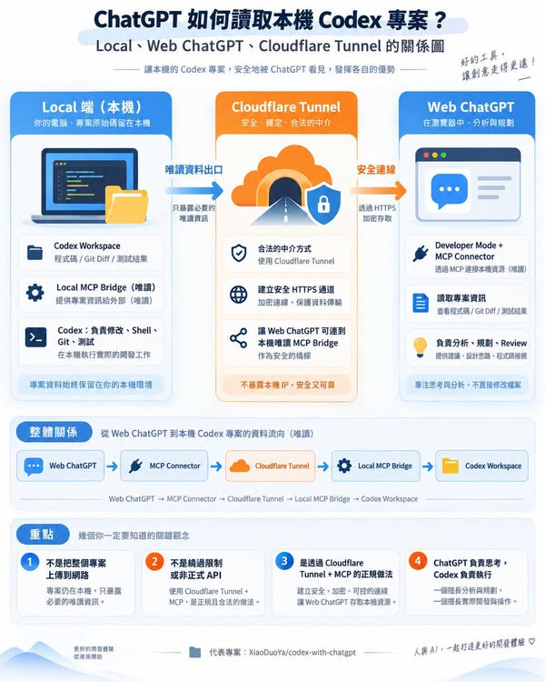

Facebook｜Codex with ChatGPT：用唯讀 MCP 讓 ChatGPT 網頁版參與本機專案規劃與審查

一句話摘要
這個社群專案不是把整個 repo 上傳給 ChatGPT，而是讓 ChatGPT 網頁版透過一條公開可達、但以 OAuth 與一次性配對碼保護的唯讀 MCP 連線，按需讀取當前本機工作區的檔案與 Git／測試資訊；真正修改、跑 shell、Git 操作仍由本機 Codex 執行。
貼文說了什麼
Facebook 公開預覽可確認，貼文題目是「ChatGPT 到底怎麼直接讀本機 Codex 專案？會不會有安全問題？」；作者連到 XiaoDuoYa/codex-with-chatgpt，並以圖卡說明基本原理。Facebook 預覽未完整提供正文，因此本文不將未顯示的貼文細節視為事實，而以專案 README 與 security 文件作為技術依據。
它的工作分工
專案宣稱的分工是：ChatGPT 網頁版負責需求釐清、規劃與獨立 review；Codex 仍負責編輯、執行指令、測試與修復。
- 控制面只交換很小的狀態訊息，例如 INIT、PLAN、EXECUTED、REVIEW、DONE；README 聲稱不在這條通道貼上 diff、日誌或檔案內容。
- 資料面是 MCP：ChatGPT 可按需要叫用 `list_directory`、`read_file`、`search_workspace`、`git_status`、`git_diff`、測試與執行摘要等 9 項唯讀工具。
- bridge 只監聽本機 loopback；為讓 ChatGPT Connector 可連入，會建立 Cloudflare Quick Tunnel，或選用已在 Cloudflare 託管網域的固定 hostname。
- 新專案需要在 ChatGPT 端設定 connector 並以一次性配對碼完成配對；README 建議為每個 workspace 建立 project-only memory 的 ChatGPT Project。
官方 README 所列的安全邊界
這些是專案作者的設計主張，並非 OpenAI 官方背書或獨立稽核結論：
- MCP server 不提供寫檔、刪除、shell 或 commit 工具，因此 connector 本身不應能取得這些能力。
- token 綁定單一 workspace；實作宣稱以 canonical realpath 阻擋 symlink、`../` 和絕對路徑跳脫。
- `.env*`、金鑰、SSH 與其他 credentials 預設拒絕讀取，並可用 `.c2cignore` 增加規則；`.env.example` 例外允許。
- 公開 endpoint 需 OAuth 2.1，採 PKCE S256、動態 client registration 與 refresh token rotation。配對碼為一次性、5 分鐘效期，README 表示最多 5 次嘗試且會限速。
不應因此忽略的風險
唯讀不等於零風險：可讀取的原始碼、diff、目錄與測試輸出仍可能含商業機密、個資或未被規則覆蓋的 token。公開 tunnel 也增加了一個網路暴露面；OAuth、ChatGPT 帳號或本機設定遭接管時，攻擊者可能取得授權範圍內的讀取能力。
建議做法：
- 先在無敏感資料的測試 repo 驗證，再用於工作專案；仔細檢查 `.c2cignore`，不要只依賴預設 denylist。
- 使用獨立 ChatGPT Project，選 project-only memory；不要把 connector 掛到混有多個客戶或私人資料的共用工作區。
- 啟用 ChatGPT 與 Cloudflare 的 MFA；僅在需要時執行 bridge／tunnel，完成後停止並查看 `c2c status` 或 `c2c doctor`。
- 把它視為第三方社群工具：安裝前閱讀原始碼、release 與安全文件；對實際讀取範圍、資料保留與 connector 行為保留人類審核。
- 不要將此方案誤解成 API／官方 Codex 功能。它明確標示為非官方、未獲 OpenAI 背書的 MIT 專案，且需要 Node.js 20+、git 與 cloudflared。
適合誰
若你已有 ChatGPT 訂閱、平常以 Codex CLI 寫程式，且希望把「先規劃、再執行、最後看真實 diff review」拆給不同介面，這是值得在隔離 repo 試驗的工作流。若專案內有高度敏感的客戶資料、production secrets、醫療／金融／校務個資，預設不建議直接啟用公開 tunnel；先採離線 review、權限隔離或企業核可的工具鏈較妥當。
原始與官方來源
- Facebook 原始分享：https://www.facebook.com/share/p/1F2HhYDu2S/
- Facebook canonical：https://www.facebook.com/groups/1713764039757273/posts/1829182968215379/
- 專案 README：https://github.com/XiaoDuoYa/codex-with-chatgpt
- 中文 README：https://github.com/XiaoDuoYa/codex-with-chatgpt/blob/main/README.zh-CN.md
- 安全模型與 threat model：https://github.com/XiaoDuoYa/codex-with-chatgpt/blob/main/docs/security.md